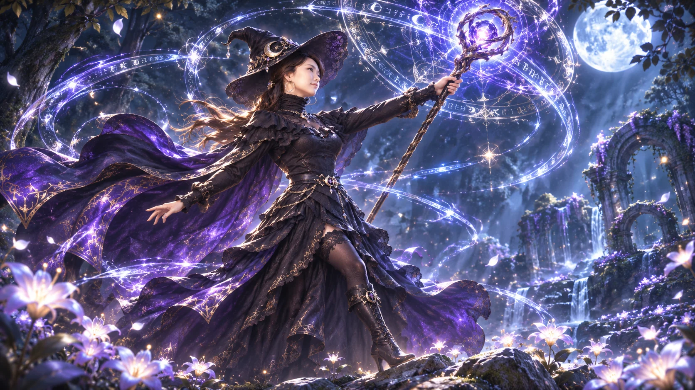
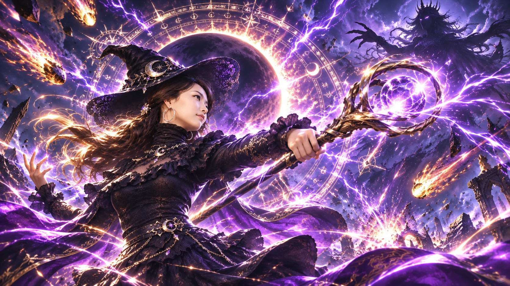

THE WITCH ARA아라 Lv. 1
HP
140 / 140
MP
100 / 100
EXP
0%
CHAPTER 01달빛 숲
✦ 0 점
☾ 초승
⚔ 0
✧ 0 COMBO
숲의 수호자보스의 예고 공격을 피하세요
현재의 임무마력 조각을 모으세요0 / 3
WASD 이동 · 스페이스 대시 · 1/2/3 마법
✦ THE MOONLIT CHRONICLES ✦
마녀 아라달빛 사냥
흩어진 별의 파편을 모아 잠든 숲을 깨워라.
네 개의 봉인, 네 명의 수호자, 그리고 아라의 마지막 소원.
01 달빛 숲02 잊힌 유적03 서리 협곡04 월식 제단
OFFLINE PWA · PC & MOBILE · 최고 기록 —
WITCH ARA 守護者の物語
THE MOONLIT CHRONICLES
달빛의 선택

MOONLIT CHRONICLES
달빛의 각성
그녀의 새로운 모험이 시작됩니다.

ULTIMATE MAGIC붉은 운석의 강림
✧ 홈 화면에 설치해 오프라인으로 즐기세요.